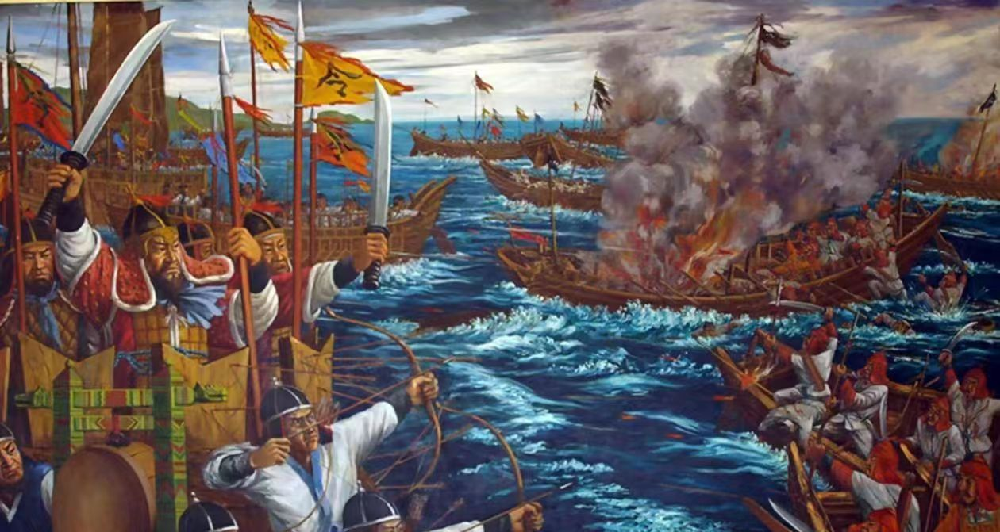

贞观之治是唐朝初年唐太宗李世民在位期间出现的清明政治，经济复苏，文化繁荣的治世局面。因当时年号为“贞观”（627年－649年）而得名。
贞观之治的出现，与唐太宗李世民的治国理念密不可分。他秉持着“以民为本”的治国思想，注重发展农业生产，减轻民众负担，推行均田制，使得农民有了自己的土地和生产资料，大大激发了农民的生产积极性。同时，他还倡导节俭，反对奢侈浪费，以身作则，树立了良好的政治风气。
在政治上，唐太宗推行了一系列改革措施，如简化地方行政机构，加强中央集权；实行科举制度，选拔有才能的人才进入官场；注重法制建设，制定了一系列法律法规，维护社会秩序。这些措施有效地巩固了唐朝的统治，促进了社会的稳定和发展。
在文化方面，唐太宗倡导儒学，注重教育，兴办学校，培养人才。他还下令整理图书典籍，推动文化的传承和发展。这些举措为唐朝的文化繁荣奠定了基础。
此外，唐太宗还注重民族团结和对外关系，他采取开明的民族政策，尊重各民族的风俗习惯，促进了民族的融合和团结。在对外关系上，他积极开展对外交流，与周边国家建立了友好的外交关系，为唐朝的对外扩张奠定了基础。
总的来说，贞观之治是唐朝历史上一个辉煌的时期，它标志着唐朝的兴盛和繁荣。这一时期的社会稳定、经济繁荣、文化昌盛、民族团结和对外友好交往，为后来的唐朝盛世奠定了坚实的基础。贞观之治的出现，不仅展示了唐太宗李世民的治国才能和智慧，也为中国历史留下了宝贵的精神财富。

白江口之战，又称白村江之战，是公元663年8月27日至8月28日，唐朝、新罗联军与倭国、百济联军在白江口（今韩国锦江入海口）发生的一次水战。
这场战役的背景可以追溯到更早的时期。在7世纪初期，朝鲜半岛上的三国——高句丽、百济和新罗——与中原的唐朝有着复杂的政治和军事关系。其中，百济与倭国（即古代日本）结成了同盟关系，共同对抗新罗和唐朝。
663年，唐朝和新罗联军决定对百济和倭国的联军发起一场决定性的战役。唐朝派出了由刘仁轨指挥的强大水军，而新罗也派出了自己的军队加入战斗。相比之下，倭国和百济的联军在人数和装备上处于劣势。
战斗在8月27日爆发。唐朝和新罗的联军利用强大的船队和先进的战术，迅速占据了优势。刘仁轨指挥船队变换阵形，分为左右两队，将倭军围住。倭军的舰只相互碰撞无法回旋，士兵大乱，陷入了混乱和恐慌之中。
经过激烈的战斗，倭国和百济的联军遭受了惨败。最终，倭军的战船全部被焚毁，数万倭军士兵被杀或溺死。这场战役对倭国产生了深远的影响，使得其对外扩张的野心受到了严重的打击。
安史之乱是中国唐代玄宗末年至代宗初年(755年12月16日至763年2月17日)由唐朝将领安禄山与史思明背叛唐朝后发动的战争，是同唐朝争夺统治权的内战，为唐由盛而衰的转折点。这场内战使得唐朝人口大量丧失，国力锐减。
安史之乱的背景是复杂的。唐朝自开元年间起，国力日盛，但由于均田制的破坏，府兵制的衰微，以及政治上的腐败，使得社会矛盾日益尖锐。唐玄宗天宝年间，唐玄宗追求享乐，宠信宦官、权臣，对边疆地区的少数民族不断采取高压政策，导致边境形势紧张。此外，唐玄宗还迷信道教，重用道士，导致朝政混乱。
在这样的背景下，安禄山和史思明利用边境地区的矛盾，以“忧国之危”、奉密诏讨伐杨国忠为借口，在范阳（今北京）起兵叛乱。他们率领的叛军迅速南下，攻占了洛阳，并逼近长安。唐玄宗在得知叛乱消息后，匆忙出逃，前往四川。在马嵬驿，唐玄宗被迫杀死了杨贵妃以平息士兵的愤怒。
安史之乱期间，唐朝军队与叛军进行了多次激战。由于唐朝军队在战争初期准备不足，加上将领的腐败和无能，使得叛军一度占据了优势。然而，在唐朝军队的顽强抵抗和各地人民的支援下，唐朝最终逐渐扭转了战局。在睢阳之战中，张巡、许远等人坚守睢阳数月，为唐朝争取了宝贵的时间。同时，唐朝还借助回纥等少数民族的力量，对叛军进行了夹击。
经过长达八年的战争，唐朝最终于763年收复了长安和洛阳，平定了安史之乱。然而，这场战争对唐朝造成了巨大的损失。大量的人口在战争中丧生或流离失所，社会经济遭受严重破坏。唐朝的国力从此一蹶不振，进入了中衰期。